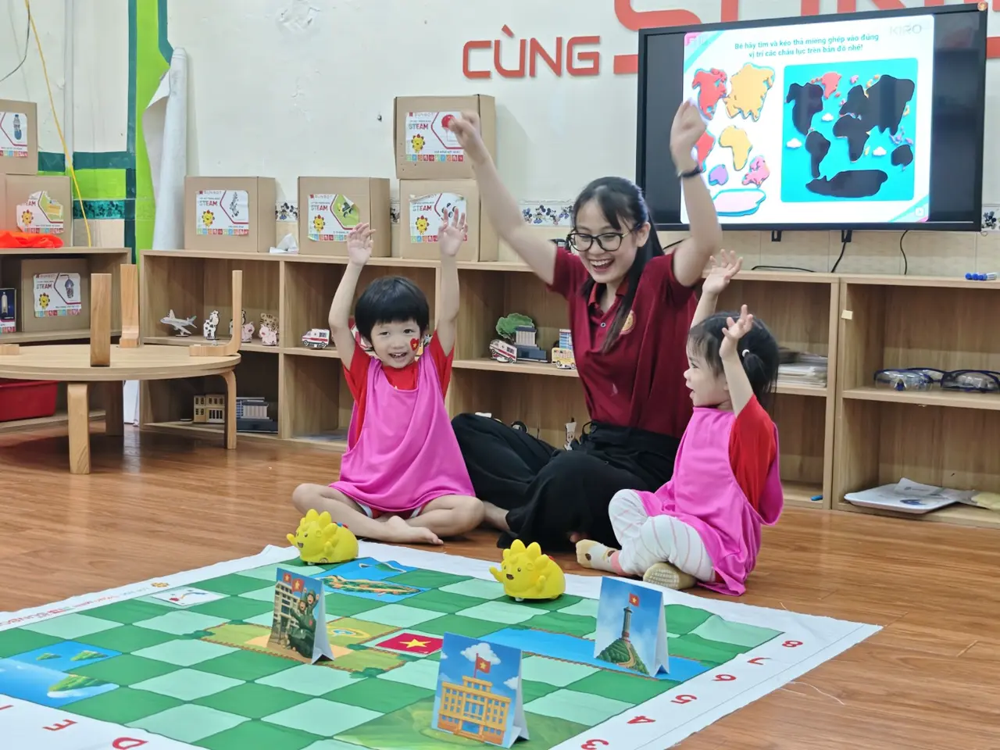
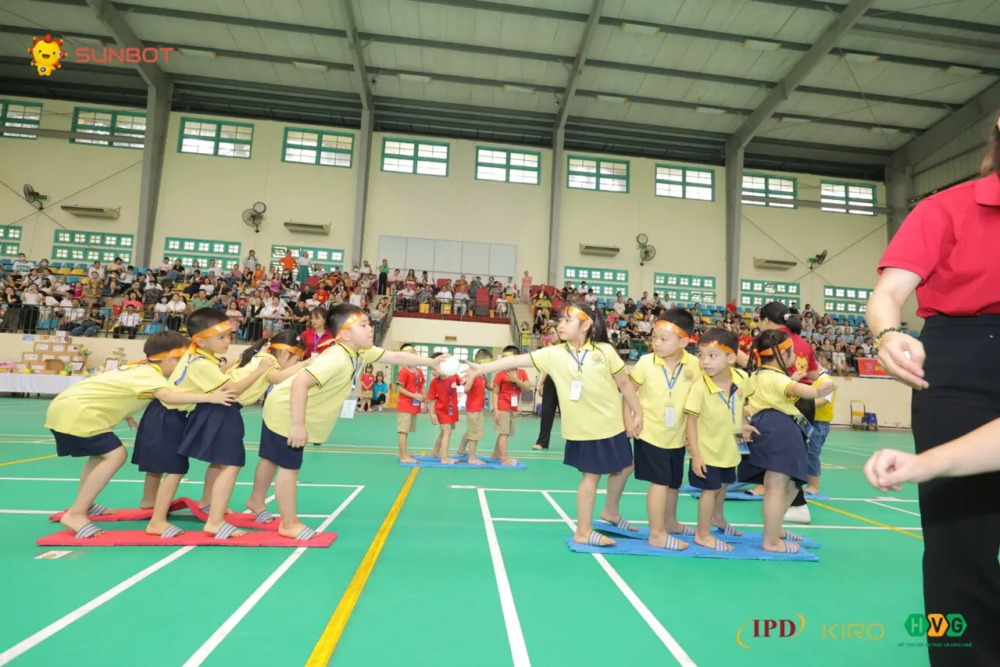
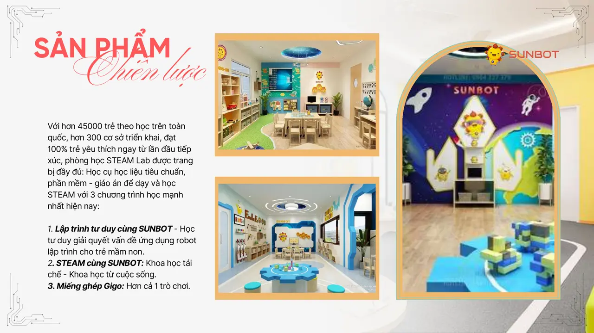
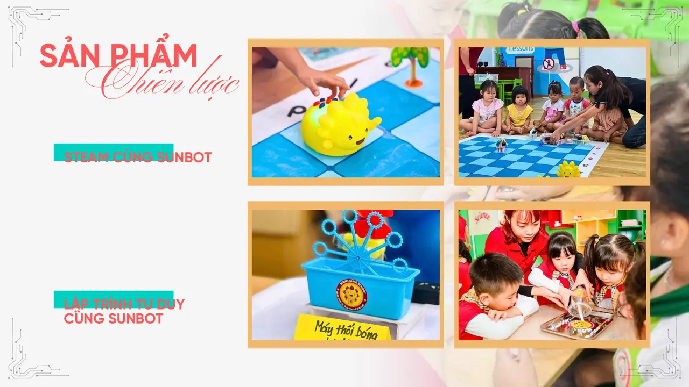
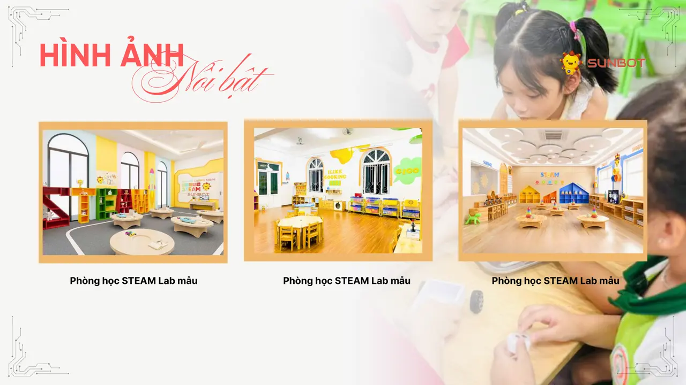

Khám phá Sunbot: robot vật lý, học liệu số, bản đồ, giáo án và hoạt động phát triển tư duy cho trẻ mầm non. Trình diễn một tình huống từ bài học Khám phá khu vườn Sunbot. Mô phỏng không thay thế thiết bị hay giáo án gốc.
Ảnh minh chứng hiện không tải được. Vui lòng thử tải lại trang.
Ảnh Sunbot thực tế trong bộ tư liệu. Hình 3D chỉ mô phỏng cấu hình và cách tổ chức hoạt động; ảnh dùng để đối chiếu thiết bị thật.
SUNBOT • HỆ SINH THÁI GIÁO DỤC
Từ lớp học đến hệ thống giáo dục
Chọn góc nhìn và khám phá các cấu phần có tư liệu, quy trình hoặc nền tảng dữ liệu thực tế.
GÓC XEM
MỘT SẢN PHẨM — NHIỀU LỚP GIÁ TRỊ
Sunbot không dừng ở robot và một tiết học
Hệ thống liên kết chương trình, học cụ, hướng dẫn giáo viên, hoạt động lớp, dữ liệu minh chứng và sân chơi STEAM. Bấm vào mỗi khối để khám phá cách vận hành và bằng chứng tương ứng.
Lộ trình khám phá toàn hệ sinh thái
Bắt đầu từ trải nghiệm của trẻ, sau đó khám phá tổ chức giáo viên, dữ liệu và hoạt động cộng đồng.
↗
SUNBOTChương trình + robot + học liệu số
Đã có sản phẩm và hoạt động thật
Robot Sunbot, sa bàn, học liệu, giáo án, lớp học, hoạt động tập huấn, tư liệu sự kiện.
Đã hình thành nền tảng triển khai
Báo cáo tiết học, hồ sơ minh chứng, học liệu và quy trình theo dõi triển khai đã được định hình để phục vụ giới thiệu, đào tạo và nhân rộng.
Cần kiểm chứng khi nhân rộng
Độ đầy đủ và độ sạch dữ liệu, đánh giá thực hành giáo viên, giá trị giáo dục đo lường theo thời gian.
Bản này minh họa mối quan hệ giữa các phân hệ; chưa đồng bộ dữ liệu lớp học thực tế, không hiển thị hồ sơ cá nhân hoặc tuyên bố mọi phân hệ đã tự động hóa hoàn toàn.
GỢI Ý THUYẾT MINH
Điểm khác biệt của Sunbot là sự kết nối giữa chương trình giáo dục, robot, học liệu số, giáo viên, minh chứng lớp học và sân chơi STEAM. Mỗi cấu phần hỗ trợ một khâu của quá trình triển khai, nhưng mức độ số hóa và chất lượng dữ liệu vẫn cần được xác minh theo từng trường.
NỀN TẢNG GIÁO DỤC • CẤU TRÚC HỌC THẬT
Học cách suy nghĩ, không học cách xem robot biểu diễn
Sunbot kết nối ngôn ngữ, trải nghiệm trực quan, lập kế hoạch hữu hình và phản hồi từ robot. Mô hình lấy trẻ làm chủ thể; người thầy tổ chức môi trường và đặt câu hỏi, robot là một học cụ để kiểm chứng phương án.
01Flashcard & trò chơiGọi tên, quan sát, kết nối từ và hình, vận động nhận diện.
02Học liệu sốGợi mở tình huống, kể chuyện và thiết lập nhiệm vụ.
04Robot & phản hồiThực thi lệnh, so sánh dự đoán, sửa và giải thích.
Robot làm được gì?
Robot di chuyển và quay theo lệnh được đưa vào. Mỗi chuyển động tạo ra kết quả rõ ràng để trẻ đối chiếu với dự đoán và sửa sai.
Giá trị giáo dục: trình tự, thuật toán, tư duy không gian, giải quyết vấn đề, tự điều chỉnh và hợp tác.
Trẻ và giáo viên làm gì?
Trẻ thảo luận và lựa chọn giải pháp. Giáo viên chuẩn bị học cụ, giới thiệu thẻ và câu chuyện, hướng dẫn quan sát, đặt câu hỏi gợi mở, không làm hộ trẻ.
Trọng tâm: quá trình học, không phải robot có AI hoặc thực hiện nhiều động tác.
Tư duy tính toán
Chia nhiệm vụ thành bước, xác định thứ tự, dự đoán, kiểm tra và sửa lỗi. Đây là trọng tâm trực tiếp của Lập trình tư duy.
STEAM sáng tạo
Quan sát, thiết kế, chế tạo, thử và cải tiến vật phẩm. Đây là dòng hoạt động bổ trợ, không đồng nghĩa mọi bài robot đều tích hợp đủ năm thành tố STEAM.
Tư tưởng lấy trẻ làm trung tâm và coi môi trường là một người thầy có sự tương đồng với cách tiếp cận Reggio Emilia. Kỹ thuật tráo thẻ nhanh của Sunbot là kỹ thuật tổ chức riêng, không được gọi là do Reggio Emilia sáng lập. Nội dung trên mô tả phương pháp, không khẳng định tăng trí nhớ hoặc phát triển não bộ bằng số liệu chưa kiểm chứng.
Trước khi có robot, giáo viên khởi động bằng ngôn ngữ và flashcard, tổ chức trò chơi và một nhiệm vụ thực tế. Trẻ dùng bản đồ và thẻ lệnh để biểu diễn cách nghĩ của mình. Robot chỉ thực hiện các lệnh đã nhận; sự khác biệt lớn nhất nằm ở việc trẻ biết dự đoán, quan sát, sửa và giải thích. Sunbot dạy tư duy bằng hoạt động, không trình diễn tính năng của một cỗ máy.
ĐÀO TẠO & CHUYỂN GIAO
Giáo viên được chuẩn bị như thế nào?
Sunbot có học liệu, các bước tập huấn, thực hành và phản hồi giáo viên. Hãy chọn từng giai đoạn để xem cách chương trình được chuyển giao và duy trì chất lượng.
→→→
Học chương trình: giáo viên nghiên cứu mục tiêu, lộ trình, tài liệu và học cụ của bài học trước khi tổ chức hoạt động.
01
Tập huấn có cấu trúc
Nội dung tập huấn được tổ chức theo lộ trình rõ ràng, gắn với học liệu và mục tiêu bài học.
02
Bài nộp và hỗ trợ
Có cơ chế ghi nhận thực hành, câu hỏi và nhu cầu hỗ trợ để giáo viên được đồng hành tốt hơn.
03
Minh chứng thực hành
Minh chứng thực hành, phản hồi chuyên môn và trạng thái hỗ trợ được ghi nhận có hệ thống; không thay thế đánh giá chuyên môn trực tiếp.

Hình ảnh hoạt động đào tạo và triển khai thực tế của Sunbot.
GỢI Ý THUYẾT MINH
Điểm khác biệt của Sunbot không chỉ nằm ở thiết bị. Giáo viên có lộ trình học liệu, hướng dẫn triển khai, luyện thao tác và phản hồi chuyên môn. Đó là nền tảng để chuyển giao chương trình một cách nhất quán.
QUẢN TRỊ TIẾT HỌC • BÁO CÁO TRIỂN KHAI
Từ tiết học đến báo cáo có thể truy xuất
Mẫu báo cáo tiết học gồm thông tin lớp, giáo viên, bài học, sĩ số, ảnh minh chứng và ghi chú triển khai. Tương tác dưới đây dùng dữ liệu minh họa để giúp người xem hình dung cách Sunbot hỗ trợ quản trị tiết học.
→→→
PHIẾU TIẾT HỌC — MINH HỌAĐang tổ chức
LV1-B6 · Khám phá khu vườn
Lớp minh họa A
Giáo viên minh họa
18 trẻ · Số liệu giả lập
Thực hành với robot và bản đồ
Chưa có trong tình huống mẫu
01. Tổ chức lớp: trẻ cùng lập lệnh cho robot, giáo viên quan sát và hướng dẫn. Dữ liệu máy tính chưa phát sinh tự động từ robot.
Luồng quản trị có ý nghĩa gì?
Cho phép nhà trường theo dõi chương trình đã được tổ chức ở lớp nào, với bài gì, có đủ thông tin và minh chứng cần thiết chưa. Đây là chất lượng thực thi, không phải phép đo tự động năng lực của trẻ.
Mẫu báo cáo thể hiện những thông tin cốt lõi để nhà trường và giáo viên theo dõi quá trình tổ chức tiết học, tình trạng minh chứng và những điểm cần lưu ý sau giờ học.
GỢI Ý THUYẾT MINH
Sau một tiết học, giáo viên có thể ghi nhận bài đã dạy, sĩ số và minh chứng. Nhà trường nhờ đó có cơ sở kiểm tra việc triển khai, nhưng các chỉ số hành chính không được đánh đồng với tiến bộ năng lực của trẻ.
HỒ SƠ TRIỂN KHAI & MINH CHỨNG
Giá trị giáo dục cần được kể bằng bằng chứng
Sunbot có cấu trúc tổng hợp hoạt động lớp, ảnh/video, hồ sơ sự kiện và câu chuyện điển hình. Đây là cách tổ chức tư liệu và minh chứng để nhà trường, phụ huynh và đối tác nhìn rõ quá trình triển khai.
→→→
Hoạt động thật: bắt đầu từ tiết học, hoạt động nhóm hoặc sự kiện đã diễn ra. Không tạo câu chuyện chỉ từ dữ liệu được suy đoán.
Hồ sơ lớp
Liên kết các bài học, hoạt động được ghi nhận và tư liệu phù hợp theo lớp.
Sẵn sàng trong hồ sơ minh chứng
Hồ sơ sự kiện
Ghi bối cảnh, hình ảnh, hoạt động STEAM và sự tham gia theo phạm vi được phép.
Sẵn sàng trong hồ sơ minh chứng
Câu chuyện đáng nhớ
Câu chuyện có nguồn, bối cảnh và được duyệt trước khi truyền thông.
Cần biên tập và xác minh
Nguyên tắc hồ sơ minh chứng
1. Có nguồn→2. Có bối cảnh→3. Được kiểm duyệt
Ba tiêu chí kiểm tra định tính, không phải chỉ số phần trăm hay điểm tác động.
Người xem có thể được biết gì?
Từng hoạt động nào đã được tổ chức; bằng chứng nào có thể dùng; giáo viên và nhà trường đã đánh giá thông tin ra sao. Thông tin cá nhân của trẻ được bảo vệ; phiên bản công khai chỉ hiển thị cấu trúc minh họa và nội dung phù hợp để giới thiệu.
GỢI Ý THUYẾT MINH
Sunbot có nền tảng để tổ chức minh chứng theo lớp, hoạt động và sự kiện. Khi được rà soát đúng, các tư liệu này giúp nhà trường nhìn thấy việc triển khai và kể lại hành trình học tập một cách có căn cứ.
OBSERVABLE LEARNING • KHÔNG CHẤM ĐIỂM TỰ ĐỘNG
Sáu nhóm biểu hiện học tập & khung quan sát của giáo viên
Hồ sơ Sunbot nhấn mạnh quan sát–phân tích, tư duy toán học, giải quyết vấn đề và trong STEAM có hợp tác, sáng tạo. Phần dưới đây dùng biểu đồ radar để nhìn tổng thể hơn: một radar mô tả các nhóm biểu hiện học tập của trẻ trong hoạt động, radar còn lại mô tả trọng tâm quan sát và tổ chức hoạt động của giáo viên.
Bản đồ năng lực trẻ trong hoạt động Sunbot
Trình bày bằng radar để người xem nhìn rõ cấu trúc năng lực Sunbot hướng tới. Đây là khung minh họa trọng tâm, không phải điểm số tự động của từng trẻ.
Năng lực trẻVùng quan sát ưu tiên
Các trục: Quan sát & phân tích, Tư duy toán học, Giải quyết vấn đề, Hợp tác, Giao tiếp, Sáng tạo STEAM.
Khung năng lực triển khai của giáo viên
Radar thứ hai cho thấy giáo viên cần mạnh ở đâu để tiết học Sunbot diễn ra chất lượng: chuẩn bị môi trường, dẫn dắt câu hỏi, quan sát, ghi nhận và phản hồi.
Năng lực triển khaiVùng phối hợp với trẻ
Các trục: Chuẩn bị môi trường, Tổ chức hoạt động, Đặt câu hỏi, Quan sát trẻ, Ghi nhận minh chứng, Phản hồi – điều chỉnh.
Quan sát & phân tích: Trẻ phân biệt điểm đầu, điểm đến, vật phẩm và đặc điểm khác nhau trên sa bàn. Gợi hỏi: “Con nhìn thấy những gì trước khi chọn đường?” | Nguồn: Hồ sơ Sunbot — Lập trình tư duy
Giáo viên cần làm gì tương ứng?
Thiết kế tình huống có mục tiêu rõ, mời trẻ nêu nhận xét ban đầu, nhắc lại ngôn ngữ chỉ hướng và quan sát cách trẻ giải thích trước khi thao tác.
Trẻ làm gì?
Quan sát, lựa chọn lệnh, trao đổi, thực hành, sửa và giải thích.
Giáo viên ghi nhận gì?
Hành vi cụ thể trong tình huống, mức hỗ trợ và cách trẻ giải thích.
Không được suy ra gì?
Điểm IQ, tỷ lệ phát triển, kết luận năng lực từ việc robot tới đích.
Radar giúp phần trình bày chuyên nghiệp và dễ nhìn hơn, nhưng vẫn chỉ là mô hình hóa chuyên môn. Nếu dùng làm công cụ đánh giá chính thức, Sunbot cần tiếp tục nghiên cứu tiêu chí, độ tin cậy và quy trình sử dụng.
GỢI Ý THUYẾT MINH
Không phải robot đi đúng là trẻ đã giỏi tư duy. Giá trị giáo dục nằm ở cách trẻ quan sát, dự đoán, trao đổi, thử nghiệm, điều chỉnh và giải thích. Giáo viên quan sát các biểu hiện ấy trong hoạt động thật và dùng chính các biểu hiện đó để hỗ trợ trẻ tốt hơn.
SUNBOT DAY • FESTIVAL • ĐẤU TRƯỜNG
Từ một tiết học đến sân chơi giáo dục cộng đồng
Đấu trường Sunbot 2019–2024 có tư liệu tổ chức thực tế. Hồ sơ Sunbot Festival 2026 mô tả mô hình hai cấp: Sunbot Day tại lớp và Festival cấp trường với chủ đề “Những nhà kiến tạo nhỏ — vì một Việt Nam xanh”.
STEAMOS · BA NHIỆM VỤ THEO KỊCH BẢN FESTIVAL 2026
Nhiệm vụ 1: trẻ cùng lựa chọn lệnh đưa Sunbot tới khu vực cần dọn rác. Giáo viên kết nối nhiệm vụ với trách nhiệm bảo vệ môi trường.
Kịch bản chương trình 2026 — không khẳng định đã tổ chức
→→
Sunbot Day: trẻ tham gia thử thách robot và câu hỏi STEAM tại lớp, hợp tác theo nhóm, chuẩn bị cho ngày hội cấp trường.

Tư liệu Đấu trường Sunbot 2024 từ hồ sơ năng lực Sunbot. Đây là ảnh hoạt động thực tế, không phải ảnh Festival 2026.
Robot Challenge
Quan sát nhiệm vụ, thảo luận, vẽ đường đi, điều khiển robot trên sa bàn.
STEAM Challenge
Nhóm trẻ hợp tác lắp ráp, thử nghiệm, trình bày mô hình và cải tiến.
Ghi nhận nỗ lực
Tinh thần tham gia, hợp tác và giải quyết nhiệm vụ được ghi nhận theo tiêu chí chương trình.
GỢI Ý THUYẾT MINH
Sunbot còn tạo ra sân chơi STEAM và Robotics. Từ hoạt động trong lớp, trẻ có cơ hội chia sẻ kết quả trong ngày hội, hợp tác và tham gia thử thách cùng bạn. Sunbot từng tổ chức Đấu trường; Festival 2026 là mô hình chương trình đang được thiết kế và triển khai theo kế hoạch.
SUNBOT • HỒ SƠ CHUYÊN MÔN
Giá trị giáo dục phía sau một tiết học
Từ giáo án thật đến hoạt động của trẻ — khám phá sâu hơn mà không rời mô hình 3D.
NỘI DUNG THEO GIÁO ÁN GỐC
LV1-B6 — Khám phá khu vườn nhà Sunbot
Nhiệm vụ trung tâm là tìm đường đưa robot tới chậu hoa có sáu bông. Hoạt động kết hợp quan sát, ngôn ngữ, làm việc nhóm, lập kế hoạch đường đi và thao tác với robot.
Thời lượng tiết học tham khảo: 35 phút. Trẻ khởi động với flashcard, kết nối học liệu số, lập kế hoạch trên bản đồ giấy và thử lệnh với robot.
Đầu vào học tập
Tình huống có đích đến, robot Sunbot, bản đồ, giấy vẽ dự kiến đường đi và học cụ chủ đề.
Hoạt động của trẻ
Quan sát nhiệm vụ, thảo luận nhóm, dự kiến đường đi, thử lệnh, giải thích và điều chỉnh.
Vai trò giáo viên
Chuyển tình huống thành câu hỏi vừa sức, tổ chức lượt thực hành, khuyến khích trẻ tự kiểm chứng.
Mở rộng liên lĩnh vực
Kết nối ngôn ngữ và trải nghiệm STEAM theo phần hoạt động có trong giáo án, không thu hẹp vào lập trình robot.
Giới hạn nội dung: sa bàn 8×8, vật cản và vị trí G5 trong ứng dụng là cách tái hiện phục vụ mô phỏng; không mặc nhiên coi là bố trí chính thức của tất cả tiết LV1-B6.
HỌC THÔNG QUA TRẢI NGHIỆM VÀ GIẢI QUYẾT VẤN ĐỀ
Sáu bước — một chu trình tư duy
Robot chỉ đưa ra kết quả có thể nhìn thấy. Quá trình trẻ dự đoán, thử, trao đổi và điều chỉnh mới là đối tượng giáo viên cần quan sát.
01Quan sát
Trẻ nhận diện điểm xuất phát, chậu hoa sáu bông và các vật phẩm trên đường đi.
“Con thấy robot đang ở đâu?”02Dự đoán
Trẻ nói hoặc chỉ ra đường đi dự kiến và điều gì có thể xảy ra.
“Đi thẳng thì robot gặp gì?”03Lập kế hoạch
Trẻ thể hiện chuỗi hành động qua bản đồ giấy và thứ tự lệnh.
“Con sẽ chọn lệnh nào trước?”04Thử nghiệm
Trẻ thực hiện lệnh, đối chiếu kết quả với dự đoán.
“Robot đã đi đúng điều con nghĩ chưa?”05Điều chỉnh
Trẻ nhận ra điểm khác biệt và đề xuất thay đổi phù hợp.
“Con muốn sửa bước nào, vì sao?”06Giải thích
Trẻ kể lại cách nhóm tìm được giải pháp, học hỏi từ các phương án khác.
“Con giải thích đường đi của nhóm mình nhé.”
Kết quả robot đến đích không đủ để kết luận trẻ đã phát triển tư duy. Cần quan sát tiến trình và giao tiếp của trẻ trong bối cảnh thực.
CÁC BIỂU HIỆN GIÁO VIÊN CÓ THỂ GHI NHẬN
Quan sát học tập — không chấm điểm bằng máy
Chọn từng miền để xem hành vi cụ thể và câu hỏi gợi mở. Đây là khung tham chiếu chuyên môn để minh họa; chưa phải công cụ đánh giá năng lực đã được chuẩn hóa hoặc kiểm định.
Lập kế hoạch: trẻ nói, vẽ hoặc chỉ ra thứ tự bước đi trước khi thao tác với robot. Giáo viên có thể hỏi: “Con chọn lệnh nào trước, vì sao?”.
Chưa có đủ quan sátThực hiện với hỗ trợThực hiện tương đối độc lập
Ba mức chỉ minh họa cách mô tả bằng chứng quan sát. Không suy ra điểm số, tỷ lệ tiến bộ hay so sánh trẻ với nhau từ lần chạy robot.
DÀNH CHO GIÁO VIÊN MỚI LÀM QUEN SUNBOT
Chuẩn bị – tổ chức – quan sát – kết thúc
Khung thực hành nhanh giúp giáo viên tự đối chiếu các bước căn bản trước buổi dạy thử. Không thay thế tập huấn thiết bị, thực hành đứng lớp và phản hồi chuyên môn.
Tình huống phản biện: Robot đi sai vì trẻ nhầm hướng trái và phải. Giáo viên nên làm gì?
0/6 nội dung đã tự đối chiếu · Không lưu lên máy chủ hoặc cấp chứng nhận.
CHUYỂN ĐỔI SỐ GẮN VỚI HOẠT ĐỘNG GIÁO DỤC
Không phải thêm màn hình — mà thay đổi cách tổ chức học
Sunbot có thể hỗ trợ chuyển đổi số ở phạm vi hoạt động giáo dục: từ nội dung số đến tổ chức thực hành, năng lực giáo viên và quy trình ghi nhận theo điều kiện triển khai.
01Chương trình và học liệu số
Giáo án, câu chuyện, hình ảnh, nhiệm vụ giúp giáo viên chuẩn bị và dẫn dắt bài học có cấu trúc.
02Trải nghiệm vật lý
Trẻ sử dụng robot, bản đồ, thẻ lệnh, học cụ và giao tiếp nhóm; không buộc dùng thiết bị cá nhân.
03Phát triển năng lực giáo viên
Đào tạo, hướng dẫn kỹ thuật và sư phạm tạo điều kiện triển khai bài học nhất quán.
04Dữ liệu và cải tiến
Công cụ ghi nhận/báo cáo của Sunbot có nền tảng triển khai, nhưng phạm vi và tính ổn định phải xác nhận theo hợp đồng cụ thể.
Góc nhìn nhà trường
Trọng tâm là tổ chức được một tiết học, chuẩn bị thiết bị và tập huấn giáo viên, quan sát trẻ tham gia.
Góc nhìn cơ quan quản lý
Trọng tâm là quy trình chuyên môn, năng lực giáo viên, tiêu chí quan sát và bằng chứng triển khai; không quy đổi mô phỏng thành điểm xếp hạng chuyển đổi số.
Góc nhìn đối tác
Trọng tâm là chuyển giao chương trình, robot và học cụ, học liệu số, đào tạo và hỗ trợ theo phạm vi hợp tác.
Điều kiện vận hành
Tùy số trẻ, số điểm trường, thiết bị sẵn có và nguồn lực giáo viên mà lựa chọn cấu hình triển khai.
Sunbot không phải phần mềm quản trị toàn trường; mô phỏng không tự thu thập dữ liệu từ robot thật, không chấm AI năng lực trẻ và không tự công nhận mức chuyển đổi số của cơ sở giáo dục.
THAM CHIẾU BỘ NHẬN DIỆN TỪ E-PROFILE
Lớp học thông minh Sunbot: khoa học nhưng gần gũi
Tông sáng, điểm nhấn vàng–cam, kệ học cụ nhiều màu và bàn thấp là những thành phần xuất hiện trong bộ phối cảnh STEAM Lab mẫu. Mô phỏng 3D có thể triển khai theo diện tích và điều kiện nhà trường.

Phối cảnh phòng mẫu 01

Phối cảnh phòng mẫu 02

Phối cảnh phòng mẫu 03
Nguồn: 2026 Sunbot Profile, trang 26, ghi “Phòng học STEAM Lab mẫu”. Đây là phối cảnh thiết kế, không phải bằng chứng cả ba phòng đã được thi công.